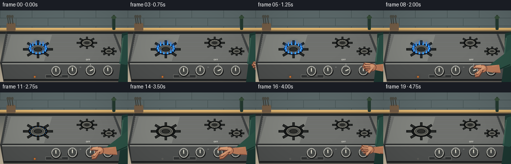
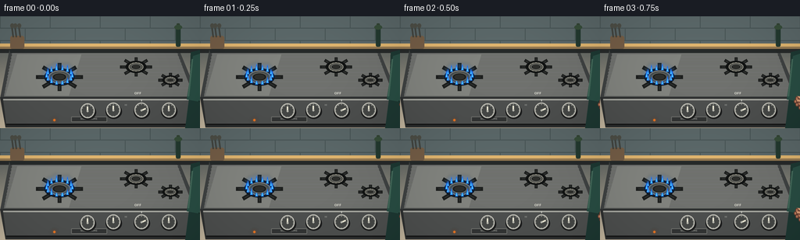

CODING AGENTS AS PIXEL WORLD MODELS
traex/GPT-5.6-Sol · motion_rationality_0052
点击播放 · 原生 RGB 像素
逐轮保存的候选
回放视频、检查图与代码变化。
每份候选均可单独播放。实际图片检查记录在下方工具轨迹中。
候选 01播放与检查图
点击播放 · 原生 RGB 像素


展开代码变化
--- 上一保存版本
+++ 本次保存版本
@@ -0,0 +1,276 @@
+from pathlib import Path
+import math
+import numpy as np
+from PIL import Image, ImageDraw, ImageFont, ImageFilter
+import artifact_io
+
+W, H, N = 256, 144, 20
+S = 4
+rng = np.random.default_rng(52)
+
+try:
+ FONT = "/usr/share/fonts/truetype/dejavu/DejaVuSans.ttf"
+ FONT_B = "/usr/share/fonts/truetype/dejavu/DejaVuSans-Bold.ttf"
+except Exception:
+ FONT = FONT_B = None
+
+def sc(v): return int(round(v*S))
+def pts(seq): return [(sc(x), sc(y)) for x,y in seq]
+def ell(d, box, fill, outline=None, width=1):
+ d.ellipse(tuple(sc(v) for v in box), fill=fill, outline=outline, width=sc(width) if outline else 1)
+def rect(d, box, fill, outline=None, width=1, radius=0):
+ b=tuple(sc(v) for v in box)
+ if radius:
+ d.rounded_rectangle(b, radius=sc(radius), fill=fill, outline=outline, width=sc(width) if outline else 1)
+ else:
+ d.rectangle(b, fill=fill, outline=outline, width=sc(width) if outline else 1)
+def line(d, xy, fill, width=1, joint='curve'):
+ d.line(pts(xy), fill=fill, width=sc(width), joint=joint)
+def smooth(x):
+ x=max(0,min(1,x)); return x*x*(3-2*x)
+
+def base_scene():
+ # A softly lit kitchen, built as a full-resolution gradient.
+ h,w=H*S,W*S
+ yy=np.linspace(0,1,h)[:,None,None]
+ top=np.array([55,67,72],float)[None,None,:]
+ bot=np.array([205,190,165],float)[None,None,:]
+ arr=np.repeat(top*(1-yy)+bot*yy,w,axis=1)
+ # subtle film/material grain, spatially fixed so the video itself is stable
+ grain=np.repeat(rng.normal(0,1.25,(h,w,1)),3,axis=2)
+ arr=np.clip(arr+grain,0,255).astype(np.uint8)
+ im=Image.fromarray(arr,'RGB')
+ d=ImageDraw.Draw(im)
+ # tiled backsplash
+ rect(d,(0,0,256,43),(92,105,106))
+ for y in (15,31): line(d,[(0,y),(256,y)],(70,83,84),1)
+ for row,y0 in enumerate((0,16,32)):
+ offset=0 if row%2==0 else 32
+ for x in range(-offset,257,64): line(d,[(x,y0),(x,y0+15)],(72,85,85),1)
+ # warm under-cabinet strip and soft backsplash highlights
+ rect(d,(0,35,256,42),(226,183,112))
+ rect(d,(0,39,256,43),(149,122,82))
+ # side wall objects: a little oil bottle and utensil crock, kept defocused-looking
+ rect(d,(225,13,231,39),(36,58,48),radius=2)
+ rect(d,(226,9,230,15),(51,68,52),radius=1)
+ ell(d,(223,11,233,17),(55,78,58))
+ rect(d,(13,25,31,42),(117,94,71),radius=3)
+ for x in (17,21,26):
+ line(d,[(x,27),(x-2,12)],(66,68,63),2)
+ ell(d,(x-4,9,x+1,15),(78,79,71))
+ # dark seam behind stove
+ rect(d,(0,42,256,47),(39,42,42))
+ # stovetop top: perspective stainless enamel surface
+ d.polygon(pts([(12,43),(229,43),(255,106),(0,106)]), fill=(64,67,67))
+ d.polygon(pts([(16,46),(226,46),(248,103),(5,103)]), fill=(112,114,110))
+ # brushed metal bands
+ for y in range(48,103,4):
+ col=112 + ((y*17)%5)
+ line(d,[(15-(y-46)*.18,y),(227+(y-46)*.35,y)],(col,col+1,col),1)
+ # reflected highlight
+ d.polygon(pts([(22,49),(104,49),(88,102),(7,102)]),fill=(130,132,127))
+ # rear backsplash ridge
+ d.polygon(pts([(12,42),(229,42),(232,47),(13,47)]),fill=(38,42,42))
+ # front control fascia
+ d.polygon(pts([(0,104),(255,104),(241,143),(7,143)]), fill=(47,49,49))
+ d.polygon(pts([(4,107),(251,107),(241,139),(8,139)]), fill=(78,80,79))
+ line(d,[(4,107),(251,107)],(167,168,161),2)
+ line(d,[(8,139),(241,139)],(25,26,26),2)
+ # small brand plaque
+ rect(d,(91,129,137,136),(50,52,52),outline=(111,112,108),radius=1)
+ f=ImageFont.truetype(FONT,sc(3)) if FONT else None
+ d.text((sc(103),sc(130)),"NORTH HOME",font=f,fill=(177,178,171))
+ return im
+
+BASE=base_scene()
+
+def draw_burner(im, cx, cy, scale=1, active=0.0, main=False, phase=0):
+ d=ImageDraw.Draw(im)
+ # cast-iron grate, rendered behind burner assembly
+ rw=30*scale; rh=18*scale
+ for ang in (0, math.pi/2, math.pi/4, -math.pi/4):
+ dx=math.cos(ang)*rw; dy=math.sin(ang)*rh
+ line(d,[(cx-dx,cy-dy),(cx+dx,cy+dy)],(29,31,30),5 if main else 4)
+ line(d,[(cx-dx*.9,cy-dy*.9),(cx+dx*.9,cy+dy*.9)],(51,53,51),1)
+ ell(d,(cx-rw*.65,cy-rh*.63,cx+rw*.65,cy+rh*.63),(24,26,25),outline=(16,18,18),width=2)
+ ell(d,(cx-rw*.47,cy-rh*.46,cx+rw*.47,cy+rh*.46),(77,78,73),outline=(151,149,137),width=1)
+ # little gas ports
+ n=14
+ for k in range(n):
+ a=2*math.pi*k/n
+ x=cx+rw*.52*math.cos(a); y=cy+rh*.51*math.sin(a)
+ ell(d,(x-1,y-.7,x+1,y+.7),(18,20,19))
+ # luminous blue gas flames; use a transparent glow layer
+ if active>0.015:
+ glow=Image.new('RGBA',im.size,(0,0,0,0)); gd=ImageDraw.Draw(glow)
+ n=14
+ for k in range(n):
+ a=2*math.pi*k/n
+ # subtle organic flicker without changing the overall burner position
+ flick=0.88+0.12*math.sin(k*2.7+phase*.8)
+ x=cx+rw*.55*math.cos(a); y=cy+rh*.52*math.sin(a)
+ fh=(5.5+3*active)*active*flick
+ fw=2.5*active+0.6
+ # flames visually rise on screen, even around an elliptical top-view ring
+ gd.ellipse((sc(x-fw*1.8),sc(y-fh-2),sc(x+fw*1.8),sc(y+2)),fill=(20,125,255,int(45*active)))
+ glow=glow.filter(ImageFilter.GaussianBlur(sc(2.1)))
+ im.paste(glow,(0,0),glow)
+ d=ImageDraw.Draw(im)
+ for k in range(n):
+ a=2*math.pi*k/n
+ flick=0.88+0.12*math.sin(k*2.7+phase*.8)
+ x=cx+rw*.55*math.cos(a); y=cy+rh*.52*math.sin(a)
+ fh=(5.5+3*active)*active*flick
+ fw=1.3*active+0.45
+ # tapered blue flame tongue
+ d.polygon(pts([(x-fw,y+.5),(x,y-fh),(x+fw,y+.5)]),fill=(24,107,250))
+ d.polygon(pts([(x-fw*.42,y),(x,y-fh*.65),(x+fw*.42,y)]),fill=(91,220,255))
+ # central cap sits above the flame ring
+ d=ImageDraw.Draw(im)
+ ell(d,(cx-rw*.32,cy-rh*.30,cx+rw*.32,cy+rh*.30),(28,30,29),outline=(104,105,99),width=1)
+ ell(d,(cx-rw*.22,cy-rh*.19,cx+rw*.22,cy+rh*.19),(45,46,43))
+
+def draw_knob(im,cx,cy,angle,primary=False):
+ d=ImageDraw.Draw(im)
+ # labels make the completed action unambiguous
+ f1=ImageFont.truetype(FONT_B,sc(4)) if FONT else None
+ f2=ImageFont.truetype(FONT,sc(3)) if FONT else None
+ if primary:
+ d.text((sc(cx-4.5),sc(cy-22)),"OFF",font=f1,fill=(218,218,208),anchor='mm')
+ # indicator tick on fascia at OFF position
+ line(d,[(cx,cy-14),(cx,cy-11.8)],(212,213,204),1)
+ d.text((sc(cx-20),sc(cy-7)),"HI",font=f2,fill=(173,175,169),anchor='mm')
+ # drop shadow
+ ell(d,(cx-10,cy-8,cx+11,cy+11),(29,30,30))
+ ell(d,(cx-9,cy-10,cx+9,cy+9),(137,138,132),outline=(205,204,194),width=1)
+ ell(d,(cx-7.2,cy-8.2,cx+7.2,cy+7.2),(70,72,70))
+ # radial grooves
+ for k in range(12):
+ a=2*math.pi*k/12
+ x1=cx+7.1*math.cos(a); y1=cy+7.1*math.sin(a)
+ x2=cx+8.2*math.cos(a); y2=cy+8.2*math.sin(a)
+ line(d,[(x1,y1),(x2,y2)],(178,178,169),.7)
+ # bright pointer line
+ ex=cx+6.0*math.cos(angle); ey=cy+6.0*math.sin(angle)
+ line(d,[(cx,cy),(ex,ey)],(237,234,215),2)
+ ell(d,(cx-1.3,cy-1.3,cx+1.3,cy+1.3),(187,187,177))
+
+def draw_person_and_hand(im, palm_x, palm_y, grip, retract=0.0):
+ """A right arm reaches from screen right. grip=0 open hand, 1 curled around knob."""
+ d=ImageDraw.Draw(im)
+ # torso at edge and green rolled sleeve, grounding the hand in a visible person
+ d.polygon(pts([(244,46),(256,43),(256,144),(237,144),(242,105)]),fill=(30,57,51))
+ d.polygon(pts([(247,51),(256,48),(256,110),(239,107)]),fill=(41,78,68))
+ line(d,[(246,55),(241,103)],(68,105,90),2)
+ # wrist and forearm runs from a sleeve opening toward the hand
+ wx=palm_x+17
+ # sleeve follows as the arm extends; shoulder remains at right edge
+ d.polygon(pts([(256,77),(256,111),(wx+3,palm_y+7),(wx-1,palm_y-8)]),fill=(45,83,70))
+ line(d,[(254,109),(wx+2,palm_y+8)],(24,49,43),2)
+ # forearm skin polygon, shaded on underside
+ skin=(191,126,92); skin_hi=(220,158,119); skin_shadow=(145,87,66); outline=(105,62,50)
+ arm_poly=[(wx+6,palm_y-7),(wx+17,palm_y-8),(wx+20,palm_y+8),(wx+4,palm_y+8),(palm_x+6,palm_y+5),(palm_x+5,palm_y-5)]
+ d.polygon(pts(arm_poly),fill=skin)
+ line(d,[(wx+5,palm_y+7),(wx+18,palm_y+8)],skin_shadow,2)
+ # palm, a slightly angled rounded mass
+ ell(d,(palm_x-8,palm_y-8,palm_x+10,palm_y+8),skin,outline=outline,width=1)
+ ell(d,(palm_x-5,palm_y-6,palm_x+6,palm_y+1),skin_hi)
+ # thumb lies across the near/right side of knob while gripping
+ if grip < .35:
+ # Open reaching fingers point left toward the control.
+ lengths=[15,17,15,11]
+ ys=[palm_y-6,palm_y-2,palm_y+2,palm_y+6]
+ for j,(ln,fy) in enumerate(zip(lengths,ys)):
+ line(d,[(palm_x-2,fy),(palm_x-ln,fy-1+j*.25)],outline,5)
+ line(d,[(palm_x-2,fy-1),(palm_x-ln+1,fy-2+j*.25)],skin_hi if j<2 else skin,3)
+ ell(d,(palm_x-ln-1,fy-3,palm_x-ln+3,fy+2),skin,outline=outline,width=1)
+ # thumb angled down
+ line(d,[(palm_x+2,palm_y+2),(palm_x-6,palm_y+11)],outline,6)
+ line(d,[(palm_x+2,palm_y+1),(palm_x-6,palm_y+10)],skin_hi,4)
+ else:
+ # Curled fingers arranged around the knob rim (knob center is 181,121).
+ kc=(181,121)
+ curl=min(1,(grip-.35)/.65)
+ # upper index/middle fingers
+ for j,off in enumerate((-5,0)):
+ start=(palm_x-2,palm_y-5+j*3)
+ mid=(188-j*1.2,114+off*.18)
+ end=(184-j*1.5,112.5+j*2.2)
+ line(d,[start,mid,end],outline,6)
+ line(d,[(start[0],start[1]-1),(mid[0],mid[1]-1),(end[0],end[1])],skin_hi,4)
+ ell(d,(end[0]-2.5,end[1]-2,end[0]+2,end[1]+2),skin_hi,outline=outline,width=1)
+ # thumb presses beneath/right of knob
+ line(d,[(palm_x+1,palm_y+1),(190,126),(185,129)],outline,7)
+ line(d,[(palm_x+1,palm_y),(190,125),(185,128)],skin_hi,4)
+ ell(d,(182.5,125.5,187,130),skin_hi,outline=outline,width=1)
+ # lower curled finger, visible under knob
+ line(d,[(palm_x-1,palm_y+5),(191,132),(184,133)],outline,5)
+ line(d,[(palm_x-1,palm_y+4),(190,131),(184,132)],skin,3)
+ # wrist highlight
+ line(d,[(wx+3,palm_y-5),(wx+12,palm_y-6)],(221,153,115),1)
+
+def render_frame(i):
+ im=BASE.copy()
+ # Flame/knob timing: reach, grasp, deliberate turn to OFF, release and withdraw.
+ if i <= 8: turn=0.0
+ elif i <= 12: turn=smooth((i-8)/4)
+ else: turn=1.0
+ if i <= 8: flame=1.0
+ elif i==9: flame=.78
+ elif i==10: flame=.45
+ elif i==11: flame=.16
+ else: flame=0.0
+
+ # fixed secondary burners
+ draw_burner(im,174,65,.68,0,False,i)
+ draw_burner(im,218,82,.52,0,False,i)
+ draw_burner(im,76,78,1.0,flame,True,i)
+
+ # control row. Main burner control is deliberately large and centered under the action.
+ initial=math.radians(-25)
+ final=math.radians(-90)
+ angle=initial+(final-initial)*turn
+ draw_knob(im,112,122,math.radians(-90),False)
+ draw_knob(im,145,121,math.radians(-90),False)
+ draw_knob(im,181,121,angle,True)
+ draw_knob(im,216,121,math.radians(-90),False)
+
+ # Hand trajectory. It starts outside frame, enters, grips, turns, then exits.
+ if i < 3:
+ px=275-(i*2); py=116; grip=0
+ elif i <= 7:
+ q=smooth((i-3)/4); px=266+(198-266)*q; py=112+(117-112)*q; grip=.12*q
+ elif i <= 12:
+ px=198; py=117; grip=.45+.55*smooth((i-7)/3)
+ elif i <= 14:
+ px=199+(i-12)*1.5; py=117; grip=1-(i-12)*.28
+ else:
+ q=smooth((i-14)/5); px=202+(275-202)*q; py=117+(112-117)*q; grip=max(0,.44*(1-q))
+ draw_person_and_hand(im,px,py,grip)
+
+ # tiny warm status lamp is on while gas flows, dark after shutoff
+ d=ImageDraw.Draw(im)
+ if flame>0:
+ ell(d,(68,132,71,135),(244,125,38))
+ glow=Image.new('RGBA',im.size,(0,0,0,0)); gd=ImageDraw.Draw(glow)
+ gd.ellipse((sc(66),sc(130),sc(73),sc(137)),fill=(255,110,20,65))
+ glow=glow.filter(ImageFilter.GaussianBlur(sc(2))); im.paste(glow,(0,0),glow)
+ else:
+ ell(d,(68,132,71,135),(55,55,52),outline=(108,107,101))
+
+ # mild vignette adds depth and keeps attention on flame/hand.
+ a=np.asarray(im).astype(np.float32)
+ yy,xx=np.mgrid[0:H*S,0:W*S]
+ dx=(xx-W*S*.5)/(W*S*.72); dy=(yy-H*S*.5)/(H*S*.90)
+ vig=np.clip(1-.15*(dx*dx+dy*dy),.79,1)[...,None]
+ a=np.clip(a*vig,0,255).astype(np.uint8)
+ im=Image.fromarray(a).resize((W,H),Image.Resampling.LANCZOS)
+ return np.asarray(im,dtype=np.uint8)
+
+def main():
+ frames=np.stack([render_frame(i) for i in range(N)],axis=0)
+ artifact_io.save(frames,Path(__file__).resolve().parent)
+ print('saved',frames.shape,frames.dtype)
+
+if __name__=='__main__':
+ main()
可观测工具轨迹
实际执行的命令与返回图片。
命令 1exit 0
/bin/bash -lc "cat prompt.txt && printf '\\n---RULES---\\n' && cat GENERATION_RULES.md && printf '\\n---SPEC---\\n' && cat task_spec.json"
命令 2exit 0
/bin/bash -lc "find . -maxdepth 2 -type f -printf '%p %s bytes\\n' | sort | head -200"
命令 3exit 0
/bin/bash -lc "sed -n '1,260p' artifact_io.py"
命令 4exit 0
/bin/bash -lc "cat > generate.py <<'PY'
from pathlib import Path
import math
import numpy as np
from PIL import Image, ImageDraw, ImageFont, ImageFilter
import artifact_io
W, H, N = 256, 144, 20
S = 4
rng = np.random.default_rng(52)
try:
FONT = \"/usr/share/fonts/truetype/dejavu/DejaVuSans.ttf\"
FONT_B = \"/usr/share/fonts/truetype/dejavu/DejaVuSans-Bold.ttf\"
except Exception:
FONT = FONT_B = None
def sc(v): return int(round(v*S))
def pts(seq): return [(sc(x), sc(y)) for x,y in seq]
def ell(d, box, fill, outline=None, width=1):
d.ellipse(tuple(sc(v) for v in box), fill=fill, outline=outline, width=sc(width) if outline else 1)
def rect(d, box, fill, outline=None, width=1, radius=0):
b=tuple(sc(v) for v in box)
if radius:
d.rounded_rectangle(b, radius=sc(radius), fill=fill, outline=outline, width=sc(width) if outline else 1)
else:
d.rectangle(b, fill=fill, outline=outline, width=sc(width) if outline else 1)
def line(d, xy, fill, width=1, joint='curve'):
d.line(pts(xy), fill=fill, width=sc(width), joint=joint)
def smooth(x):
x=max(0,min(1,x)); return x*x*(3-2*x)
def base_scene():
# A softly lit kitchen, built as a full-resolution gradient.
h,w=H*S,W*S
yy=np.linspace(0,1,h)[:,None,None]
top=np.array([55,67,72],float)[None,None,:]
bot=np.array([205,190,165],float)[None,None,:]
arr=np.repeat(top*(1-yy)+bot*yy,w,axis=1)
# subtle film/material grain, spatially fixed so the video itself is stable
grain=np.repeat(rng.normal(0,1.25,(h,w,1)),3,axis=2)
arr=np.clip(arr+grain,0,255).astype(np.uint8)
im=Image.fromarray(arr,'RGB')
d=ImageDraw.Draw(im)
# tiled backsplash
rect(d,(0,0,256,43),(92,105,106))
for y in (15,31): line(d,[(0,y),(256,y)],(70,83,84),1)
for row,y0 in enumerate((0,16,32)):
offset=0 if row%2==0 else 32
for x in range(-offset,257,64): line(d,[(x,y0),(x,y0+15)],(72,85,85),1)
# warm under-cabinet strip and soft backsplash highlights
rect(d,(0,35,256,42),(226,183,112))
rect(d,(0,39,256,43),(149,122,82))
# side wall objects: a little oil bottle and utensil crock, kept defocused-looking
rect(d,(225,13,231,39),(36,58,48),radius=2)
rect(d,(226,9,230,15),(51,68,52),radius=1)
ell(d,(223,11,233,17),(55,78,58))
rect(d,(13,25,31,42),(117,94,71),radius=3)
for x in (17,21,26):
line(d,[(x,27),(x-2,12)],(66,68,63),2)
ell(d,(x-4,9,x+1,15),(78,79,71))
# dark seam behind stove
rect(d,(0,42,256,47),(39,42,42))
# stovetop top: perspective stainless enamel surface
d.polygon(pts([(12,43),(229,43),(255,106),(0,106)]), fill=(64,67,67))
d.polygon(pts([(16,46),(226,46),(248,103),(5,103)]), fill=(112,114,110))
# brushed metal bands
for y in range(48,103,4):
col=112 + ((y*17)%5)
line(d,[(15-(y-46)*.18,y),(227+(y-46)*.35,y)],(col,col+1,col),1)
# reflected highlight
d.polygon(pts([(22,49),(104,49),(88,102),(7,102)]),fill=(130,132,127))
# rear backsplash ridge
d.polygon(pts([(12,42),(229,42),(232,47),(13,47)]),fill=(38,42,42))
# front control fascia
d.polygon(pts([(0,104),(255,104),(241,143),(7,143)]), fill=(47,49,49))
d.polygon(pts([(4,107),(251,107),(241,139),(8,139)]), fill=(78,80,79))
line(d,[(4,107),(251,107)],(167,168,161),2)
line(d,[(8,139),(241,139)],(25,26,26),2)
# small brand plaque
rect(d,(91,129,137,136),(50,52,52),outline=(111,112,108),radius=1)
f=ImageFont.truetype(FONT,sc(3)) if FONT else None
d.text((sc(103),sc(130)),\"NORTH HOME\",font=f,fill=(177,178,171))
return im
BASE=base_scene()
def draw_burner(im, cx, cy, scale=1, active=0.0, main=False, phase=0):
d=ImageDraw.Draw(im)
# cast-iron grate, rendered behind burner assembly
rw=30*scale; rh=18*scale
for ang in (0, math.pi/2, math.pi/4, -math.pi/4):
dx=math.cos(ang)*rw; dy=math.sin(ang)*rh
line(d,[(cx-dx,cy-dy),(cx+dx,cy+dy)],(29,31,30),5 if main else 4)
line(d,[(cx-dx*.9,cy-dy*.9),(cx+dx*.9,cy+dy*.9)],(51,53,51),1)
ell(d,(cx-rw*.65,cy-rh*.63,cx+rw*.65,cy+rh*.63),(24,26,25),outline=(16,18,18),width=2)
ell(d,(cx-rw*.47,cy-rh*.46,cx+rw*.47,cy+rh*.46),(77,78,73),outline=(151,149,137),width=1)
# little gas ports
n=14
for k in range(n):
a=2*math.pi*k/n
x=cx+rw*.52*math.cos(a); y=cy+rh*.51*math.sin(a)
ell(d,(x-1,y-.7,x+1,y+.7),(18,20,19))
# luminous blue gas flames; use a transparent glow layer
if active>0.015:
glow=Image.new('RGBA',im.size,(0,0,0,0)); gd=ImageDraw.Draw(glow)
n=14
for k in range(n):
a=2*math.pi*k/n
# subtle organic flicker without changing the overall burner position
flick=0.88+0.12*math.sin(k*2.7+phase*.8)
x=cx+rw*.55*math.cos(a); y=cy+rh*.52*math.sin(a)
fh=(5.5+3*active)*active*flick
fw=2.5*active+0.6
# flames visually rise on screen, even around an elliptical top-view ring
gd.ellipse((sc(x-fw*1.8),sc(y-fh-2),sc(x+fw*1.8),sc(y+2)),fill=(20,125,255,int(45*active)))
glow=glow.filter(ImageFilter.GaussianBlur(sc(2.1)))
im.paste(glow,(0,0),glow)
d=ImageDraw.Draw(im)
for k in range(n):
a=2*math.pi*k/n
flick=0.88+0.12*math.sin(k*2.7+phase*.8)
x=cx+rw*.55*math.cos(a); y=cy+rh*.52*math.sin(a)
fh=(5.5+3*active)*active*flick
fw=1.3*active+0.45
# tapered blue flame tongue
d.polygon(pts([(x-fw,y+.5),(x,y-fh),(x+fw,y+.5)]),fill=(24,107,250))
d.polygon(pts([(x-fw*.42,y),(x,y-fh*.65),(x+fw*.42,y)]),fill=(91,220,255))
# central cap sits above the flame ring
d=ImageDraw.Draw(im)
ell(d,(cx-rw*.32,cy-rh*.30,cx+rw*.32,cy+rh*.30),(28,30,29),outline=(104,105,99),width=1)
ell(d,(cx-rw*.22,cy-rh*.19,cx+rw*.22,cy+rh*.19),(45,46,43))
def draw_knob(im,cx,cy,angle,primary=False):
d=ImageDraw.Draw(im)
# labels make the completed action unambiguous
f1=ImageFont.truetype(FONT_B,sc(4)) if FONT else None
f2=ImageFont.truetype(FONT,sc(3)) if FONT else None
if primary:
d.text((sc(cx-4.5),sc(cy-22)),\"OFF\",font=f1,fill=(218,218,208),anchor='mm')
# indicator tick on fascia at OFF position
line(d,[(cx,cy-14),(cx,cy-11.8)],(212,213,204),1)
d.text((sc(cx-20),sc(cy-7)),\"HI\",font=f2,fill=(173,175,169),anchor='mm')
# drop shadow
ell(d,(cx-10,cy-8,cx+11,cy+11),(29,30,30))
ell(d,(cx-9,cy-10,cx+9,cy+9),(137,138,132),outline=(205,204,194),width=1)
ell(d,(cx-7.2,cy-8.2,cx+7.2,cy+7.2),(70,72,70))
# radial grooves
for k in range(12):
a=2*math.pi*k/12
x1=cx+7.1*math.cos(a); y1=cy+7.1*math.sin(a)
x2=cx+8.2*math.cos(a); y2=cy+8.2*math.sin(a)
line(d,[(x1,y1),(x2,y2)],(178,178,169),.7)
# bright pointer line
ex=cx+6.0*math.cos(angle); ey=cy+6.0*math.sin(angle)
line(d,[(cx,cy),(ex,ey)],(237,234,215),2)
ell(d,(cx-1.3,cy-1.3,cx+1.3,cy+1.3),(187,187,177))
def draw_person_and_hand(im, palm_x, palm_y, grip, retract=0.0):
\"\"\"A right arm reaches from screen right. grip=0 open hand, 1 curled around knob.\"\"\"
d=ImageDraw.Draw(im)
# torso at edge and green rolled sleeve, grounding the hand in a visible person
d.polygon(pts([(244,46),(256,43),(256,144),(237,144),(242,105)]),fill=(30,57,51))
d.polygon(pts([(247,51),(256,48),(256,110),(239,107)]),fill=(41,78,68))
line(d,[(246,55),(241,103)],(68,105,90),2)
# wrist and forearm runs from a sleeve opening toward the hand
wx=palm_x+17
# sleeve follows as the arm extends; shoulder remains at right edge
d.polygon(pts([(256,77),(256,111),(wx+3,palm_y+7),(wx-1,palm_y-8)]),fill=(45,83,70))
line(d,[(254,109),(wx+2,palm_y+8)],(24,49,43),2)
# forearm skin polygon, shaded on underside
skin=(191,126,92); skin_hi=(220,158,119); skin_shadow=(145,87,66); outline=(105,62,50)
arm_poly=[(wx+6,palm_y-7),(wx+17,palm_y-8),(wx+20,palm_y+8),(wx+4,palm_y+8),(palm_x+6,palm_y+5),(palm_x+5,palm_y-5)]
d.polygon(pts(arm_poly),fill=skin)
line(d,[(wx+5,palm_y+7),(wx+18,palm_y+8)],skin_shadow,2)
# palm, a slightly angled rounded mass
ell(d,(palm_x-8,palm_y-8,palm_x+10,palm_y+8),skin,outline=outline,width=1)
ell(d,(palm_x-5,palm_y-6,palm_x+6,palm_y+1),skin_hi)
# thumb lies across the near/right side of knob while gripping
if grip < .35:
# Open reaching fingers point left toward the control.
lengths=[15,17,15,11]
ys=[palm_y-6,palm_y-2,palm_y+2,palm_y+6]
for j,(ln,fy) in enumerate(zip(lengths,ys)):
line(d,[(palm_x-2,fy),(palm_x-ln,fy-1+j*.25)],outline,5)
line(d,[(palm_x-2,fy-1),(palm_x-ln+1,fy-2+j*.25)],skin_hi if j<2 else skin,3)
ell(d,(palm_x-ln-1,fy-3,palm_x-ln+3,fy+2),skin,outline=outline,width=1)
# thumb angled down
line(d,[(palm_x+2,palm_y+2),(palm_x-6,palm_y+11)],outline,6)
line(d,[(palm_x+2,palm_y+1),(palm_x-6,palm_y+10)],skin_hi,4)
else:
# Curled fingers arranged around the knob rim (knob center is 181,121).
kc=(181,121)
curl=min(1,(grip-.35)/.65)
# upper index/middle fingers
for j,off in enumerate((-5,0)):
start=(palm_x-2,palm_y-5+j*3)
mid=(188-j*1.2,114+off*.18)
end=(184-j*1.5,112.5+j*2.2)
line(d,[start,mid,end],outline,6)
line(d,[(start[0],start[1]-1),(mid[0],mid[1]-1),(end[0],end[1])],skin_hi,4)
ell(d,(end[0]-2.5,end[1]-2,end[0]+2,end[1]+2),skin_hi,outline=outline,width=1)
# thumb presses beneath/right of knob
line(d,[(palm_x+1,palm_y+1),(190,126),(185,129)],outline,7)
line(d,[(palm_x+1,palm_y),(190,125),(185,128)],skin_hi,4)
ell(d,(182.5,125.5,187,130),skin_hi,outline=outline,width=1)
# lower curled finger, visible under knob
line(d,[(palm_x-1,palm_y+5),(191,132),(184,133)],outline,5)
line(d,[(palm_x-1,palm_y+4),(190,131),(184,132)],skin,3)
# wrist highlight
line(d,[(wx+3,palm_y-5),(wx+12,palm_y-6)],(221,153,115),1)
def render_frame(i):
im=BASE.copy()
# Flame/knob timing: reach, grasp, deliberate turn to OFF, release and withdraw.
if i <= 8: turn=0.0
elif i <= 12: turn=smooth((i-8)/4)
else: turn=1.0
if i <= 8: flame=1.0
elif i==9: flame=.78
elif i==10: flame=.45
elif i==11: flame=.16
else: flame=0.0
# fixed secondary burners
draw_burner(im,174,65,.68,0,False,i)
draw_burner(im,218,82,.52,0,False,i)
draw_burner(im,76,78,1.0,flame,True,i)
# control row. Main burner control is deliberately large and centered under the action.
initial=math.radians(-25)
final=math.radians(-90)
angle=initial+(final-initial)*turn
draw_knob(im,112,122,math.radians(-90),False)
draw_knob(im,145,121,math.radians(-90),False)
draw_knob(im,181,121,angle,True)
draw_knob(im,216,121,math.radians(-90),False)
# Hand trajectory. It starts outside frame, enters, grips, turns, then exits.
if i < 3:
px=275-(i*2); py=116; grip=0
elif i <= 7:
q=smooth((i-3)/4); px=266+(198-266)*q; py=112+(117-112)*q; grip=.12*q
elif i <= 12:
px=198; py=117; grip=.45+.55*smooth((i-7)/3)
elif i <= 14:
px=199+(i-12)*1.5; py=117; grip=1-(i-12)*.28
else:
q=smooth((i-14)/5); px=202+(275-202)*q; py=117+(112-117)*q; grip=max(0,.44*(1-q))
draw_person_and_hand(im,px,py,grip)
# tiny warm status lamp is on while gas flows, dark after shutoff
d=ImageDraw.Draw(im)
if flame>0:
ell(d,(68,132,71,135),(244,125,38))
glow=Image.new('RGBA',im.size,(0,0,0,0)); gd=ImageDraw.Draw(glow)
gd.ellipse((sc(66),sc(130),sc(73),sc(137)),fill=(255,110,20,65))
glow=glow.filter(ImageFilter.GaussianBlur(sc(2))); im.paste(glow,(0,0),glow)
else:
ell(d,(68,132,71,135),(55,55,52),outline=(108,107,101))
# mild vignette adds depth and keeps attention on flame/hand.
a=np.asarray(im).astype(np.float32)
yy,xx=np.mgrid[0:H*S,0:W*S]
dx=(xx-W*S*.5)/(W*S*.72); dy=(yy-H*S*.5)/(H*S*.90)
vig=np.clip(1-.15*(dx*dx+dy*dy),.79,1)[...,None]
a=np.clip(a*vig,0,255).astype(np.uint8)
im=Image.fromarray(a).resize((W,H),Image.Resampling.LANCZOS)
return np.asarray(im,dtype=np.uint8)
def main():
frames=np.stack([render_frame(i) for i in range(N)],axis=0)
artifact_io.save(frames,Path(__file__).resolve().parent)
print('saved',frames.shape,frames.dtype)
if __name__=='__main__':
main()
PY
python generate.py
ls -lh pixels.npz index.html inspection.png frames/00.png frames/19.png"命令 5exit 0
/bin/bash -lc "python - <<'PY'
import numpy as np
from PIL import Image
fs=np.stack([np.array(Image.open(f'frames/{i:02d}.png')) for i in range(20)])
print('shape/dtype/range:',fs.shape,fs.dtype,fs.min(),fs.max())
print('mean abs frame deltas:',np.round(np.abs(np.diff(fs.astype(float),axis=0)).mean((1,2,3)),2).tolist())
print('unique frames:',len({x.tobytes() for x in fs}))
print('artifacts:',__import__('os').path.exists('index.html'),__import__('os').path.exists('pixels.npz'))
# confirm packed tensor decodes to first and final frames
z=np.load('pixels.npz')['pixels']
for i in (0,19):
p=z[:,:,i]; rgb=np.stack([(p>>16)&255,(p>>8)&255,p&255],-1).astype('uint8')
print(i,np.array_equal(rgb,fs[i]))
PY"保存候选 1 份；完成命令 5 次；可验证图片返回 0 张。原始 API 响应与完整日志保留在本地。